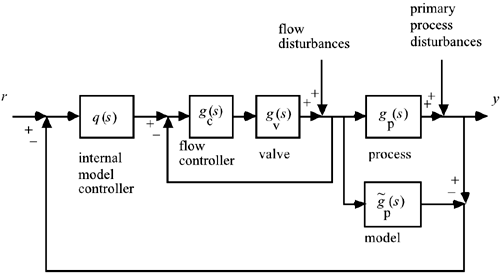

| [ Team LiB ] |
|
10.5 Cascade IMCIMC can also be implemented in a cascade structure. Frequently, the primary controller is IMC, while the secondary controller is PID; this is particularly true when the secondary control loop involves flow control, as shown in Figure 10-10. Notice that the measured flow implemented on the process is also used on the model (recall that the model output is obtained by integrating the model differential equations). If the control valve hits a constraint and cannot achieve the desired flow rate (flow setpoint), then the process model "knows" this and a realistic model output is predicted. This minimizes a problem known as "reset windup," which is sometime associated with the manipulated inputs hitting a constraint (this will be discussed further in Chapter 11). Figure 10-10. Cascade IMC outer-loop, PID flow-control inner-loop. The internal model controller should be designed based on a model that includes the flow control loop dynamics
The reader should also be able to develop a control block diagram for cascade control where both the primary and secondary loops use IMC (see Exercise 12). |
| [ Team LiB ] |
|